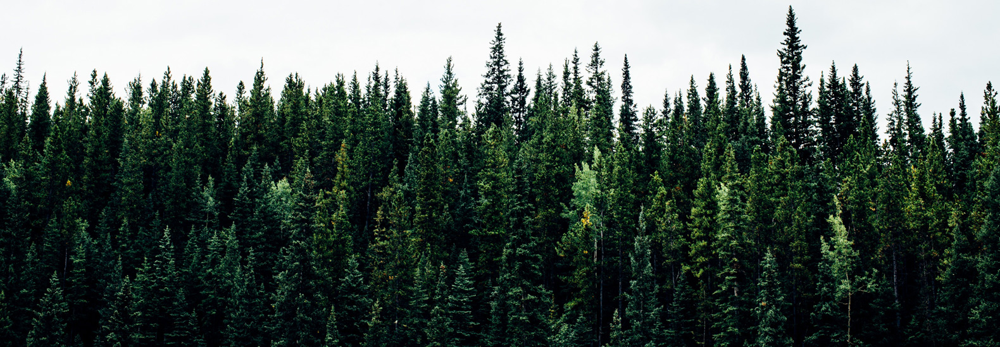
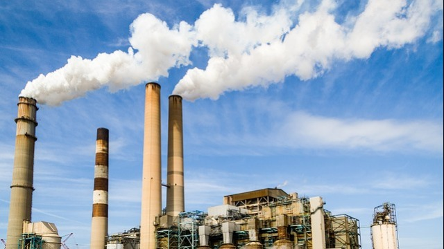

Get Started
What Is Air Pollution?
Air pollution refers to the release of pollutants into the air that are detrimental to human health and the planet as a whole.

What Causes Air Pollution?
“Most air pollution comes from energy use and production,” says John Walke, director of the Clean Air Project, part of the Climate and Clean Air program at NRDC. “Burning fossil fuels releases gases and chemicals into the air.” And in an especially destructive feedback loop, air pollution not only contributes to climate change but is also exacerbated by it. “Air pollution in the form of carbon dioxide and methane raises the earth’s temperature,” Walke says. “Another type of air pollution is then worsened by that increased heat: Smog forms when the weather is warmer and there’s more ultraviolet radiation.” Climate change also increases the production of allergenic air pollutants including mold (thanks to damp conditions caused by extreme weather and increased flooding) and pollen (due to a longer pollen season and more pollen production).
Effects of Air Pollution
“While we’ve made progress over the last 40-plus years improving air quality in the U.S. thanks to the Clean Air Act, climate change will make it harder in the future to meet pollution standards, which are designed to protect health,” says Kim Knowlton, senior scientist and deputy director of the NRDC Science Center.
Smog and soot
These two are the most prevalent types of air pollution. Smog, or “ground-level ozone,” as it is more wonkily called, occurs when emissions from combusting fossil fuels react with sunlight. Soot, or “particulate matter,” is made up of tiny particles of chemicals, soil, smoke, dust, or allergens, in the form of gas or solids, that are carried in the air. The EPA’s “Plain English Guide to the Clean Air Act” states, “In many parts of the United States, pollution has reduced the distance and clarity of what we see by 70 percent.” The sources of smog and soot are similar. “Both come from cars and trucks, factories, power plants, incinerators, engines—anything that combusts fossil fuels such as coal, gas, or natural gas,” Walke says. The tiniest airborne particles in soot—whether they’re in the form of gas or solids—are especially dangerous because they can penetrate the lungs and bloodstream and worsen bronchitis, lead to heart attacks, and even hasten death.
Smog can irritate the eyes and throat and also damage the lungs—especially of people who work or exercise outside, children, and senior citizens. It’s even worse for people who have asthma or allergies—these extra pollutants only intensify their symptoms and can trigger asthma attacks.
Hazardous air pollutants
These are either deadly or have severe health risks even in small amounts. Almost 200 are regulated by law; some of the most common are mercury, lead, dioxins, and benzene. “These are also most often emitted during gas or coal combustion, incinerating, or in the case of benzene, found in gasoline,” Walke says. Benzene, classified as a carcinogen by the EPA, can cause eye, skin, and lung irritation in the short term and blood disorders in the long term. Dioxins, more typically found in food but also present in small amounts in the air, can affect the liver in the short term and harm the immune, nervous, and endocrine systems, as well as reproductive functions. Lead in large amounts can damage children’s brains and kidneys, and even in small amounts it can affect children’s IQ and ability to learn. Mercury affects the central nervous system.
Polycyclic aromatic hydrocarbons, or PAHs, are toxic components of traffic exhaust and wildfire smoke. In large amounts, they have been linked to eye and lung irritation, blood and liver issues, and even cancer. In one recent study, the children of mothers who’d had higher PAH exposure during pregnancy had slower brain processing speeds and worse symptoms of ADHD.
Greenhouse gases
By trapping the earth’s heat in the atmosphere, greenhouse gases lead to warmer temperatures and all the hallmarks of climate change: rising sea levels, more extreme weather, heat-related deaths, and increasing transmission of infectious diseases like Lyme. According to a 2014 EPA study, carbon dioxide was responsible for 81 percent of the country’s total greenhouse gas emissions, and methane made up 11 percent. “Carbon dioxide comes from combusting fossil fuels, and methane comes from natural and industrial sources, including the large amounts that are released during oil and gas drilling,” Walke says. “We emit far larger amounts of carbon dioxide, but methane is significantly more potent, so it’s also very destructive.” Another class of greenhouse gases, hydrofluorocarbons (HFCs), are thousands of times more powerful than carbon dioxide in their ability to trap heat. In October 2016, more than 140 countries reached an agreement to reduce the use of these chemicals—which are used in air conditioners and refrigerators—and find greener alternatives over time. David Doniger, director of NRDC’s Climate and Clean Air program, writes, “NRDC estimates that the agreed HFC phase-down will avoid the equivalent of more than 80 billion tons of CO2 over the next 35 years.”

Pollen and mold
Mold and allergens from trees, weeds, and grass are also carried in the air, are exacerbated by climate change, and can be hazardous to health. They are not regulated by the government and are less directly connected to human actions, but they can be considered air pollution. “When homes, schools, or businesses get water damage, mold can grow and can produce allergenic airborne pollutants,” Knowlton says. “Mold exposure can precipitate asthma attacks or an allergic response, and some molds can even produce toxins that would be dangerous for anyone to inhale.”
Pollen allergies are worsening because of climate change. “Lab and field studies are showing that the more carbon dioxide pollen-producing plants—especially ragweed—are grown in, the bigger they grow and the more pollen they produce,” Knowlton says. “Climate change also extends the pollen production season, and some studies are beginning to suggest that ragweed pollen itself might be becoming a more potent allergen.” That means more people will suffer runny noses, fevers, itchy eyes, and other symptoms.
How to Help Reduce Air Pollution
“The less gasoline we burn, the better we’re doing to reduce air pollution and harmful effects of climate change,” Walke says. “Make good choices about transportation. When you can, walk, ride a bike, or take public transportation. For driving, choose cars that get better miles per gallon of gas or choose an electric car.” You can also investigate your power provider options—you may be able to request that your electricity be supplied by wind or solar. Buying your food locally cuts down on the fossil fuels burned in trucking or flying food in from across the country. And perhaps most important, “Support leaders who push for clean air and water and responsible steps on climate change,” Walke says.
How to Protect Your Health
“When you see in the newspaper or hear on the weather report that pollution levels are high, it may be useful to limit the time when children go outside or you go for a jog,” Walke says. Generally, ozone levels tend to be lower in the morning. When you do exercise outside, stay as far as you can from heavily trafficked roads. Then shower and wash your clothes to remove fine particles. If the air quality is bad, stay inside with windows closed. Wear sunscreen. When ultraviolet radiation comes through the weakened ozone layer, it can cause skin damage and skin cancer.